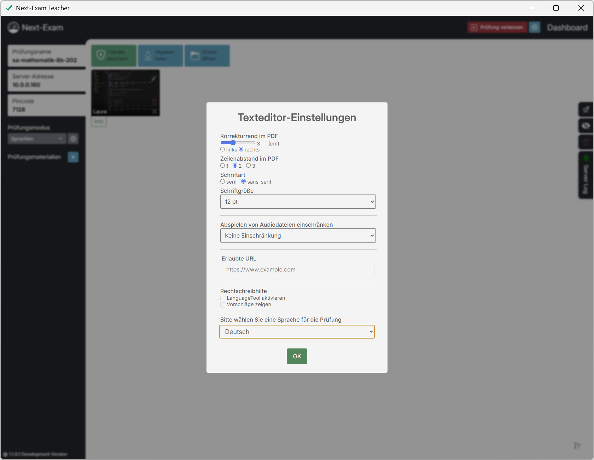
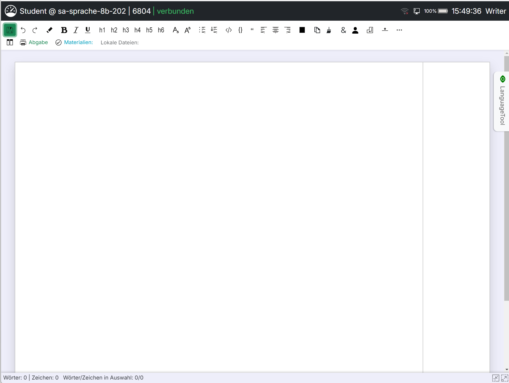
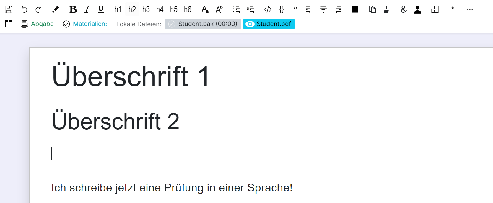
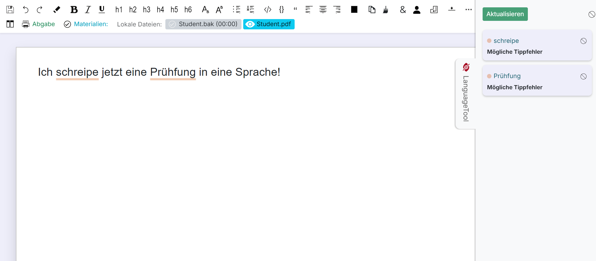
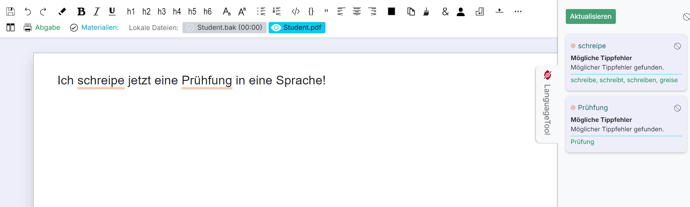
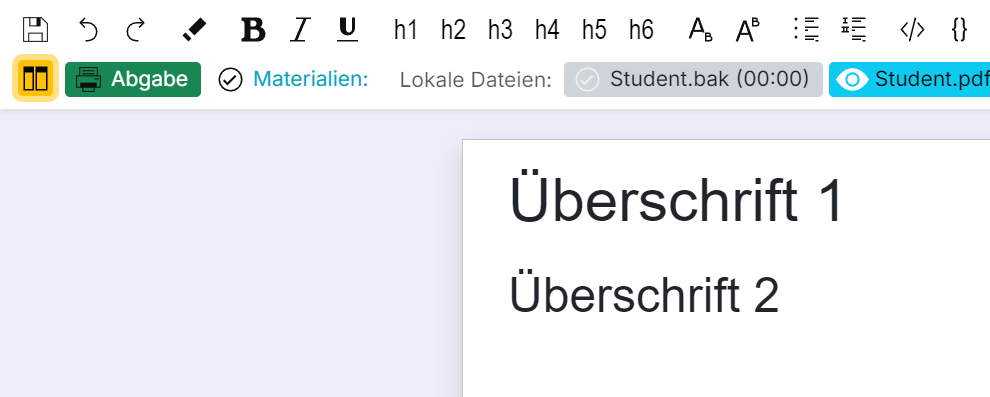
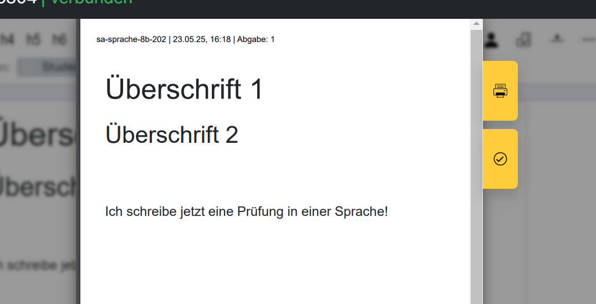

Prüfungsmodus Sprachen (Texteditor)
Im Modus Sprachen schreiben die Schüler:innen in einem abgesicherten Texteditor mit Formatierungsfunktionen, optionaler Rechtschreibhilfe (LanguageTool) und Audio-Unterstützung für Hörverständnis-Aufgaben.
Lehrkraft
Nach Auswahl des Prüfungsmodus Sprachen erscheinen in der Seitenleiste die Texteditor-Einstellungen:
{kind=link}

- Sprache: Sprache der Rechtschreibhilfe (Deutsch, Englisch UK/US, Französisch, Spanisch, Italienisch, Slowenisch oder „andere“) – Startwert für alle Schüler:innen; diese können die Sprache im Editor selbst noch ändern (siehe LanguageTool-Panel).
- LanguageTool: Aktiviert die passive Rechtschreibhilfe. Mit Vorschläge zeigen werden zusätzlich Korrekturvorschläge angezeigt.
- Unter Erweitert:
- Eigener LT Host: Optional ein eigener LanguageTool-Server (Host/Port) statt der lokalen Instanz.
- Audiodateien: Anzahl der erlaubten Abspielversuche pro Hörbeispiel (keine Einschränkung oder 1–4×). Die Audiodateien selbst werden als Prüfungsmaterial hinzugefügt.
- Korrekturrand im PDF: Breite des Korrekturrands (2–5 cm) im Abgabe-PDF.
- Zeilenabstand im PDF: 1×, 2× oder 3×.
- Schriftart: serif oder sans-serif.
- Schriftgröße: 8–20 pt.
Diese Einstellungen wirken sich auf den Editor und das erzeugte Abgabe-PDF aus.
- Template: Optional kann eine Vorlage (
.odtoder.docx) gewählt werden, die beim Prüfungsstart in den Editor der Schüler:innen geladen wird. Bei aktivierten Gruppen getrennt für A und B. - Prüfungsmaterialien: Dateien (z. B. Wörterbuch-PDF, Audiodateien) und URLs, die während der Prüfung verfügbar sind.
Zeitstrahl / Bearbeitungsverlauf
Aus den regelmäßig geholten Sicherungen kann die Lehrkraft pro Schüler:in einen Bearbeitungsverlauf erzeugen (Diff-Ansicht über alle .htm-Sicherungen):
- Schrittweises Durchblättern der Sicherungen („Sicherung x von y“) oder automatisches Abspielen der Schrittfolge.
- Änderungen zwischen den Sicherungen werden farblich hervorgehoben, inklusive Wortstatistik.
- Der Verlauf kann als
<name>_editor_timeline.jsongespeichert werden.
So lässt sich der Entstehungsprozess eines Textes nachvollziehen.
Schüler:in
Nach dem Absichern öffnet sich der Texteditor im Vollbild.
{kind=link}

Toolbar-Funktionen
{kind=link}

- sichern – speichert den aktuellen Arbeitsstand (zusätzlich wird automatisch gesichert).
- rückgängig / wiederholen – widerruft bzw. wiederholt Änderungen.
- fett, kursiv, unterstrichen, hochgestellt, tiefgestellt – Zeichenformatierung; Formatierung löschen entfernt sie wieder.
- Überschrift 1–6 – Formatvorlagen für Überschriften.
- ungeordnete / geordnete Liste, Zitat, Codeblock, Trennlinie – Absatzformate.
- linksbündig, zentriert, rechtsbündig, Blocksatz – Textausrichtung.
- Textfarbe – Farbe des markierten Textes.
- Tabelle einfügen – mit Funktionen für Zeilen/Spalten, Titelzeile und Zellen vereinen/teilen.
- Sonderzeichen einfügen, Seitenumbruch, Zählerzeile (Zeichen-/Wortzähler pro Abschnitt).
- Spaltenansicht (Splitview) – zeigt Prüfungsmaterialien neben dem Editor an.
- Zoom – Ansicht vergrößern/verkleinern.
- Wort- und Zeichenanzahl (gesamt und in der Auswahl) werden laufend angezeigt.
LanguageTool-Panel
Hat die Lehrkraft LanguageTool aktiviert, erscheint ein Seitenbereich mit der Rechtschreibprüfung:
{kind=link}

- Ohne Vorschläge werden mögliche Fehler nur markiert.
- Mit Vorschläge zeigen werden zusätzlich Verbesserungsvorschläge angeboten.
{kind=link}

- Über Lokal / Extern kann zwischen dem lokal mitgelieferten LanguageTool und dem von der Lehrkraft konfigurierten externen Server gewechselt werden; Aktualisieren stößt eine neue Prüfung an.
- Über ein Dropdown im Panel kann die Person die Sprache der Rechtschreibhilfe selbst ändern (Deutsch, Englisch UK/US, Französisch, Spanisch, Italienisch, Slowenisch).
Nur lokal gültig
Diese Auswahl gilt nur lokal für die aktuelle Sitzung und wird bei einem Abschnittswechsel oder erneutem Verbinden wieder auf die von der Lehrkraft eingestellte Sprache zurückgesetzt.
Prüfungsmaterialien und Audio
- Bereitgestellte Materialien (Dateien, URLs) sind über die Seitenleiste abrufbar; Materialien aktualisieren lädt die aktuelle Liste vom Server.
- Hörbeispiele werden über „Audio abspielen“ gestartet; die verbleibenden Durchläufe werden angezeigt, sofern die Lehrkraft die Abspielversuche begrenzt hat.
Abgabe
{kind=link}

- Arbeit an Lehrperson senden: Erzeugt aus dem Text ein PDF (mit den von der Lehrkraft vorgegebenen Einstellungen wie Korrekturrand und Schriftbild) und überträgt es an den Teacher. Für die finale Abgabe steht Finale Abgabe an Lehrperson senden zur Verfügung.
- drucken: Sendet eine Druckanfrage an die Lehrperson bzw. druckt direkt, wenn der autonome Druck freigegeben ist.
- Abgaben werden automatisch signiert (siehe Erweiterte Funktionen → Signierte PDFs validieren).
{kind=link}
